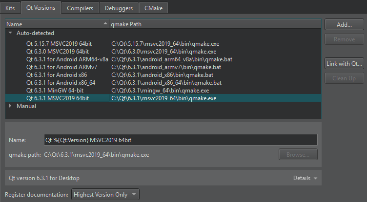
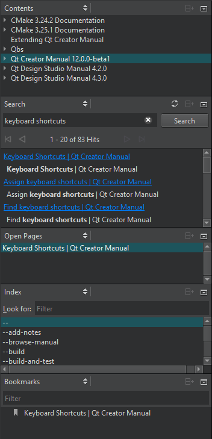

Find information in Qt documentation
Qt Creator, Qt and other Qt deliverables have documentation as .qch files. All the documentation is accessible in the Help mode.
By default, Qt Creator registers only the latest available version of the documentation for each installed Qt module. To register all installed documentation, select Preferences > Kits > Qt Versions > Register documentation.

Help mode sidebar views

To find information in the documentation in the Help mode, select:
- Bookmarks to view a list of pages on which you have added bookmarks.
- Contents to see all the documentation installed on the development PC and to browse the documentation contents.
- Index to find information based on a list of keywords in all the installed documents.
- Open Pages to view a list of currently open documentation pages.
- Search to search from all the installed documents.
See also Add bookmarks to help pages and Search from documentation.